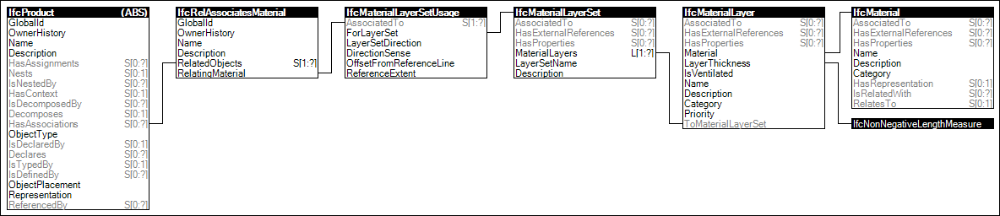

Link to this page
Link to this pageMaterial layer set usage defines layout at occurrences to indicate a direction and offset from the 'Axis' reference curve, and a reference extent such as for a default wall height.
The concept of Material layer set usage is only applicable to certain product subtypes, refered to as "Standard case" elements. It supports a certain range of parametric definitions for those element configurations.
The material of those standard case elements is defined by IfcMaterialLayerSetUsage and is attached by the IfcRelAssociatesMaterial.RelatingMaterial. It is accessible by the inverse HasAssociations relationship. Standard case elements with multiple layers can be represented by refering to several IfcMaterialLayer's within the IfcMaterialLayerSet that is referenced from the IfcMaterialLayerUsage.
Figure 21 illustrates an instance diagram.
 |
Figure 21 — Material Layer Set Usage |